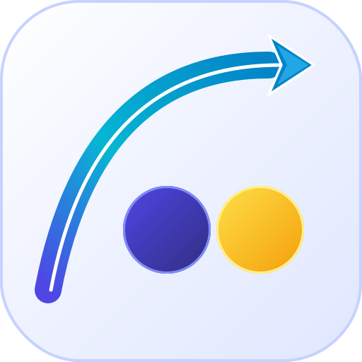

矢羽根案 1 • ステルス・矢羽根ウイング 【一押し推奨】
 44px
44px
 32px
32px
Stealth Wing Fletching
矢頭の後ろが美しくくびれ、両翼（上下）に鋭い矢羽根が後退するツバメ尾形状。胴体の白コアラインが矢頭の中央へ自然に溶け込み、圧倒的なスピード感を演出。

64px
- 形状: 両端に矢羽根（後退ウイング）が広がるスワローテイル・ヘッド。
- 利点: 「三角形を貼り付けた感」が完全に消滅し、胴体と一体化。
- 印象: 最新鋭の戦闘機やハイテク・アーチェリーのような極上のシャープネス。
矢羽根案 2 • 2連矢羽根シェブロン
 44px
44px
Double Chevron Fletching
前後に並ぶ2連のV字矢羽根（シェブロン）が推進力を生み出す加速デザイン。先端に向かって重なる2つの矢羽根が、前方への力強い推力を強調。
64px
32px
- 形状: 2つの矢羽根が重なり合う複層シェブロン。
- 利点: 「高速」「トランスポーズ（転置）」のアクションが直感的に伝わる。
- 印象: 先進的なテックアイコン、デジタルUIらしさ。
矢羽根案 3 • エアロ・ノッチフェザー
 44px
44px
Aero Notch Fletching
矢頭の中央にスリット（ノッチ）を刻み、白レーザーラインが先端まで貫通する構造。矢頭の根元に矢羽根フィンが張り出し、知的な航空宇宙感を表現。
64px
32px
- 形状: 中央ノッチスリット ＋ 左右フレア矢羽根フィン。
- 利点: 胴体中央の白ラインが矢頭の先端まで途切れず貫通。
- 印象: CADや精密測定機器のような、工学的でハイプレシジョンな世界観。